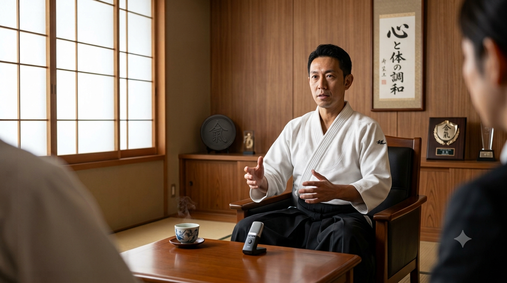
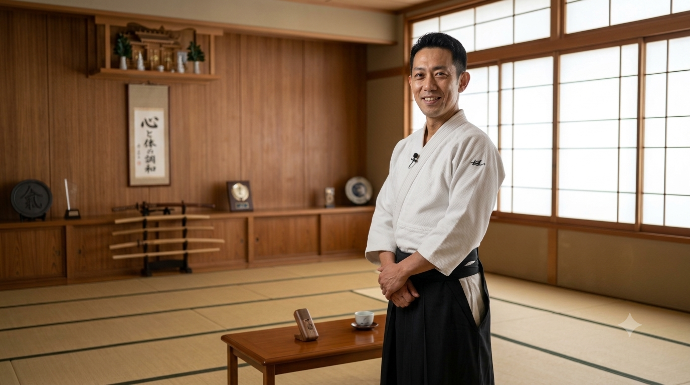

「勝ち負けのない武道」だからこそ学べるものがある。
地域の道場で子どもから大人まで指導を行う前田道場長に、合気道を教える中で大切にしている「想い」と、現代社会において合気道が与えてくれる心のゆとりについて伺いました。
Q1. 本日はよろしくお願いします。まずは、前田先生が合気道を始めたきっかけと、この道場を開いた想いをお聞かせいただけますか？
前田先生（以下、前田）：
こちらこそ、よろしくお願いします。
私が合気道に出会ったのは高校生の頃でした。当時は身体が弱く、自分に自信が持てなかったんです。そんな時に「相手の力を利用し、戦わずに制する」合気道の理念を知り、強く惹かれました。
道場を開いたのは、ストレスの多い現代だからこそ、「人と競い合わなくても強くなれる場所」を作りたかったからです。他者と勝ち負けを競うのではなく、昨日の自分と向き合い、少しずつ成長していく喜びを味わってほしい。その想いで日々指導を行っています。

Q2. 合気道の指導において、特に大切にされている「軸」のようなものは何でしょうか？
前田：
一番大切にしているのは「調和」の心です。
合気道には試合（競技）がありません。相手を叩きのめすのではなく、相手の力を受け入れ、一つになることで技を成立させます。
「相手を敵として見ない。力をぶつけ合うのではなく、包み込む。」
これは単なる身体の動かし方ではなく、人間関係や日常生活にもそのまま通じる考え方なんです。道場での稽古を通して、日常のトラブルやプレッシャーに対しても「力で抗うのではなく、いなして受け止める」しなやかな強さを育んでほしいと思っています。

Q3. 初心者の方や、「武道は少し敷居が高い」と感じている方へメッセージをお願いします。
前田：
「体が硬いから」「運動神経に自信がないから」と心配される方が多いのですが、合気道に筋力や格闘のセンスは一切不要です。当道場でも、下は小学生から上は70代の方まで、それぞれのペースで楽しく汗を流しています。
技ができるようになる楽しさはもちろんですが、稽古が終わったあとの「心がすっきりと整う感覚」をぜひ体験していただきたいですね。気になった方は、ぜひ一度体験稽古に遊びに来てください。温かい仲間たちが笑顔でお迎えします！
編集後記（スタッフより）
インタビュアーの私も、前田先生のお話を聞く中で「戦わない強さ」という言葉の深さに思わず背筋が伸びる思いでした。自分を大切にし、他者を尊重する合気道の教えは、忙しい現代を生きる私たちに大きなヒントを与えてくれます。